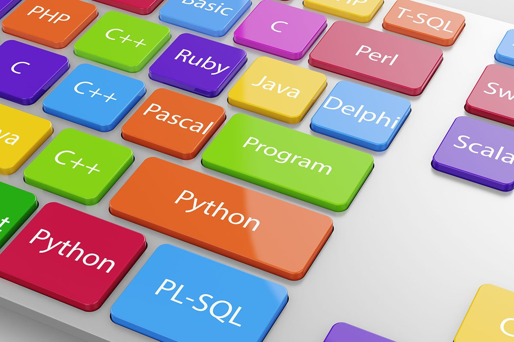

Imagens e Vídeos
Imagens
As imagens seguintes representam como entendo ser o mundo da programação e meu futuro como uma pessoa desenvolvedora de software.


Vídeos
Veja o vídeo seguinte para entender um pouco da carreira de desenvolvedor de software